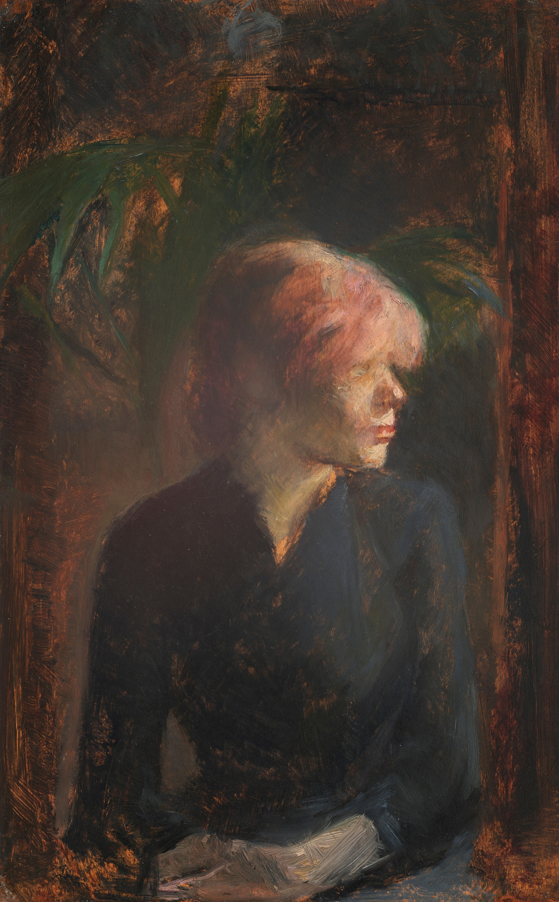
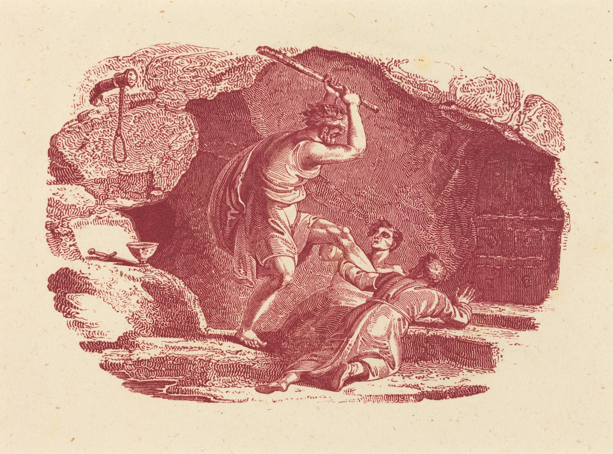
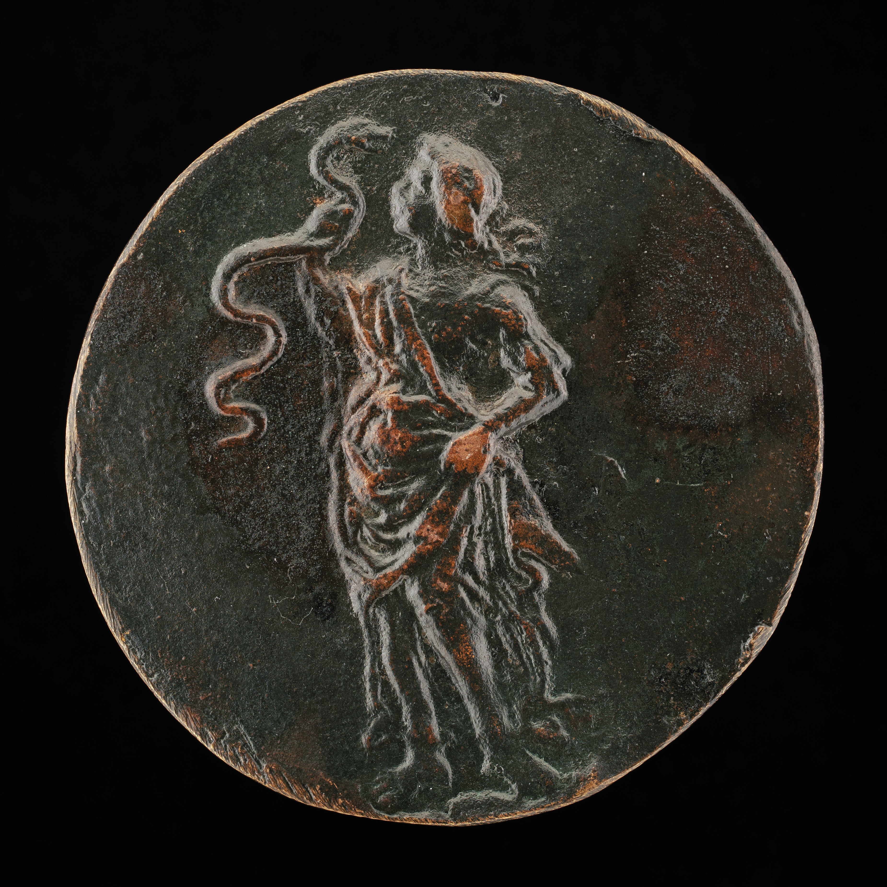

You can see every painting that is saved on this website below! All of them are in Public Domain, meaning that you can use and re-use them for any purpose.
La Blanchisseuse, 1886, Henri de Tolouse-Lautrec.

Carmen Gaudin, 1885, Henri de Tolouse-Lautrec.Calanque des Antibois, 1881/1882, Henri Edmond Cross.Venice, c. 1903, Henri Edmond Cross.

Murder Scene, Thomas Bewick.

Wisdom Gazing at a Serpent, c. 1500, Unknown.The Smiling Girl, c. 1925, Imitator of Johannes Vermeer.Liseuse a la Lampe (Woman Reading by Lamplight), 1879, Félix-Hilaire Buhot.
Info.txt - Notepad
in order to re-open the closed window, simply click on the start icon below at the bottom of the page. alternatively, you can click here.
if this page is overflown (too small), please resize it. optimal size is 1872x995px


 Info.txt - Notepad
Info.txt - Notepad